Esta página brinda información clara sobre salud física, emocional y hábitos en la adolescencia.
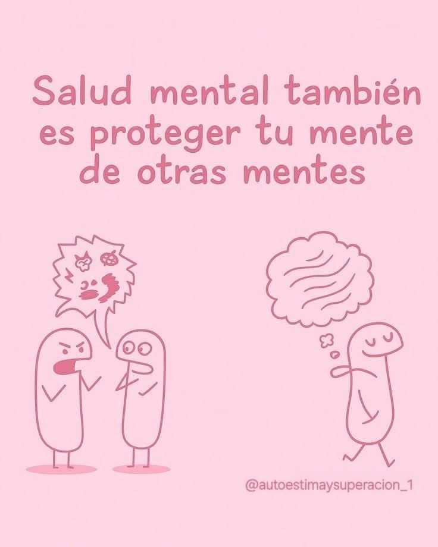
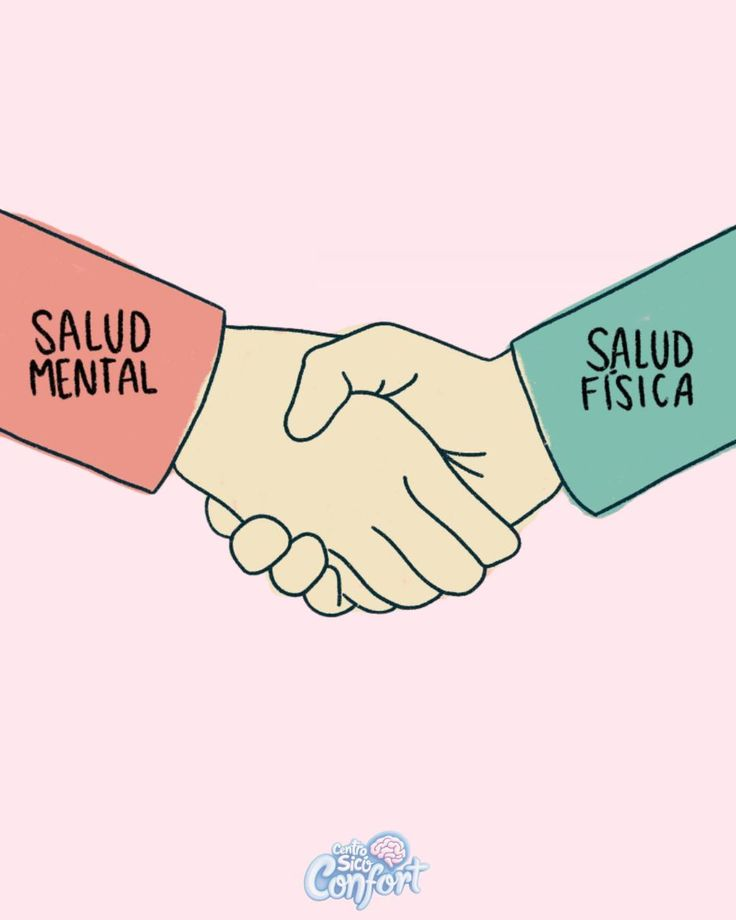
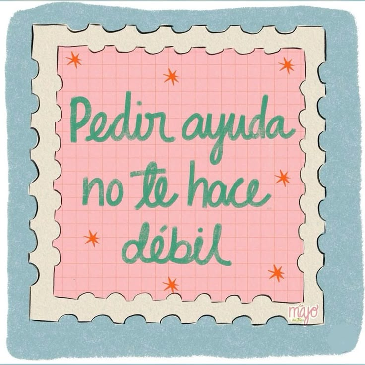
Es aprender a identificar qué sientes, entender por qué lo sientes y decidir qué hacer con eso sin que la emoción te controle. Es como ser el capitán de tu propio barco: aunque no puedes elegir el clima (las emociones), sí puedes decidir cómo mover las velas para navegar seguro. A menudo nos enseñan que los hombres deben ser “fuertes” y no mostrar sentimientos. Pero la verdadera fuerza está en reconocer cuando estás triste, enojado o confundido. Gestionar tus emociones te ayuda a evitar conflictos y a sentirte en paz contigo mismo. “Cuidar tus emociones es una parte tan importante de tu salud como cuidar tu cuerpo.
Es la fuerza que tus amigos o el entorno ejercen sobre ti para que hagas algo que ellos quieren, solo para ser aceptado o evitar que se burlen de ti. Muchas veces creemos que si decimos “no”, perderemos a nuestros amigos, pero la realidad es que los amigos reales respetan tus límites. “Si te obliga a ponerte en riesgo, no es una amistad, es una presión.
No se trata de creerse el mejor, sino de aceptarse con virtudes y defectos. En la secundaria, la presión por “encajar” o lucir de cierta forma es enorme. Tu valor no depende de cuantos likes recibas ni de si eres el más musculoso o el más gracioso. La autoestima masculina sana nace de respetar tu propio proceso y tus propios valores. “ Cuidar de ti mismo no es egoísmo, es amor propio.
Cómo nos conectamos con amigos, pareja y familia. las relaciones sanas se basan en la responsabilidad. Esto significa ser claro con lo que sientes y cuidar el impacto de tus palabras o acciones que tienen en los demás. Aprender a poner límites y a respetar los de otros es la base de cualquier relación exitosa. “Si un vínculo te quita paz o libertad, no es saludable.
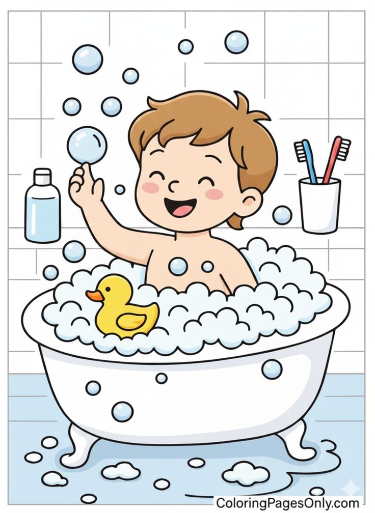
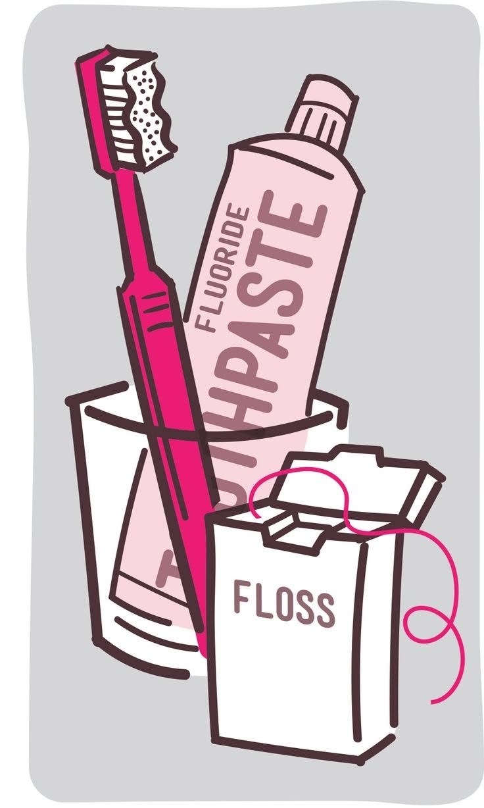
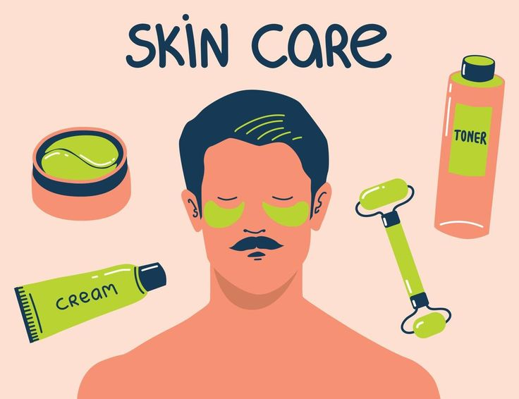
Es el conjunto de hábitos diarios que nos permiten mantener el cuerpo limpio, prevenir enfermedades y fortalecer nuestra seguridad personal. En la adolescencia, es la base del respeto hacia uno mismo. Una buena higiene no oculta el olor con perfume, lo previene con limpieza.
Lavado de rostro (mañana y noche) para controlar el exceso de grasa y prevenir el acné sin dañar la piel. Usar un jabón específico para el rostro (el de cuerpo es muy fuerte). El objetivo es prevenir el acné y las irritaciones.
Ducha diaria enfocada en zonas de alta sudoración ( axilas, pies) y limpieza genital minuciosa para eliminar bacterias y malos olores. El secado total de la piel es vital para evitar hongos.
Cepillado después de cada comida, incluyendo la lengua, que es donde vive el 90% de las bacterias que causan el mal aliento y uso de hilo dental para garantizar un aliento fresco y encías sanas.
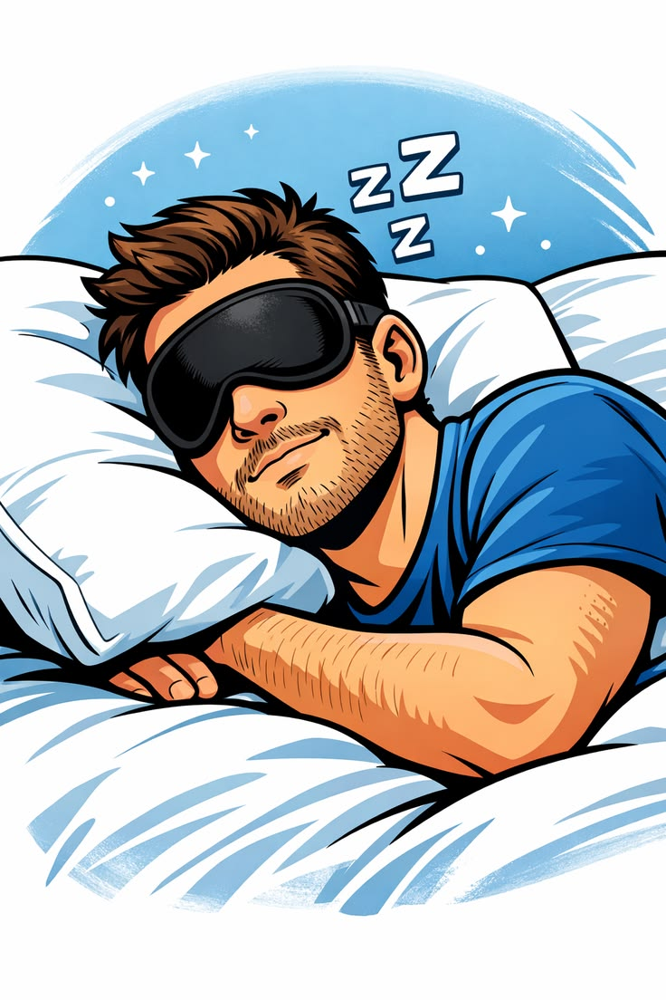
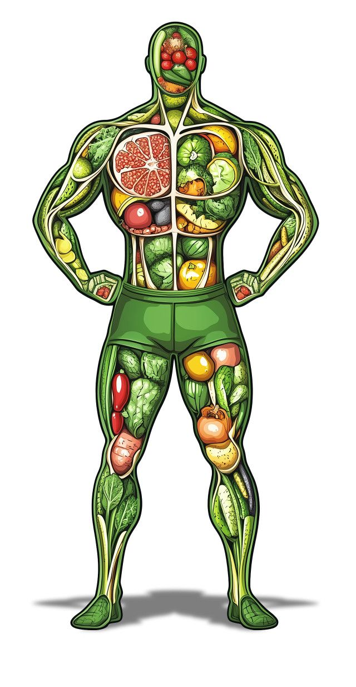
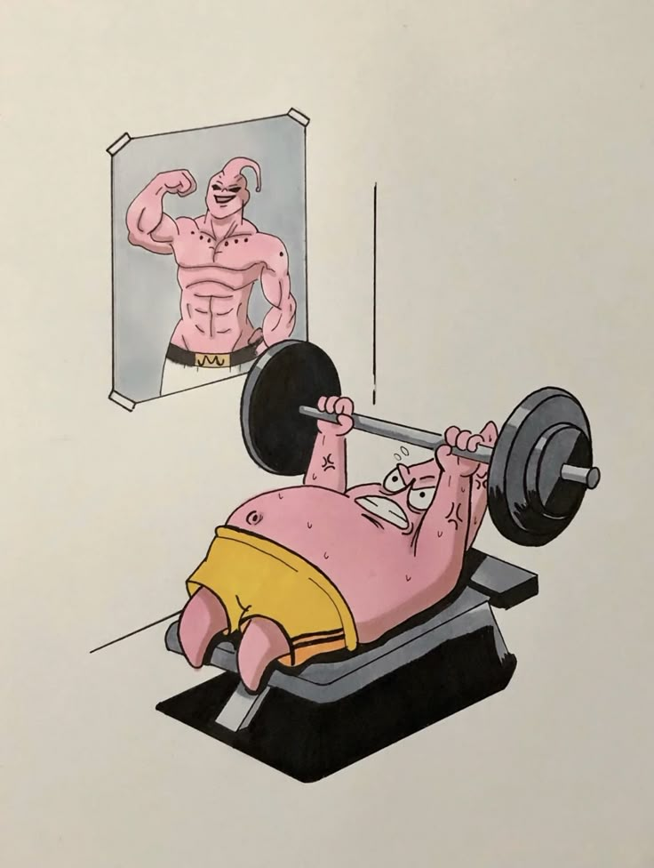
Es el proceso de elegir e ingerir alimentos para obtener los nutrientes y la energía que el cuerpo necesita. En la adolescencia, una buena alimentación es el combustible clave para el crecimiento físico, el desarrollo del cerebro y el rendimiento escolar.
Es cualquier actividad corporal que no solo fortalece los músculos, sino que es el mejor entrenamiento para que el corazón y los pulmones funcionen al máximo nivel. Mejora la concentración y la agilidad mental.
Tiempo esencial de recuperación donde el cuerpo y la mente se regeneran. En la adolescencia, es el momento clave para el crecimiento físico y la consolidación de lo aprendido durante el día.
Es el hábito de limpieza específica de los órganos genitales para prevenir infecciones, irritaciones y malos olores. Es una parte fundamental del autoconocimiento y el respeto por el propio cuerpo. Después de sudar haciendo deporte, la humedad en la zona genital aumenta el riesgo de bacterias. Es el momento más importante para una ducha y cambio de ropa.
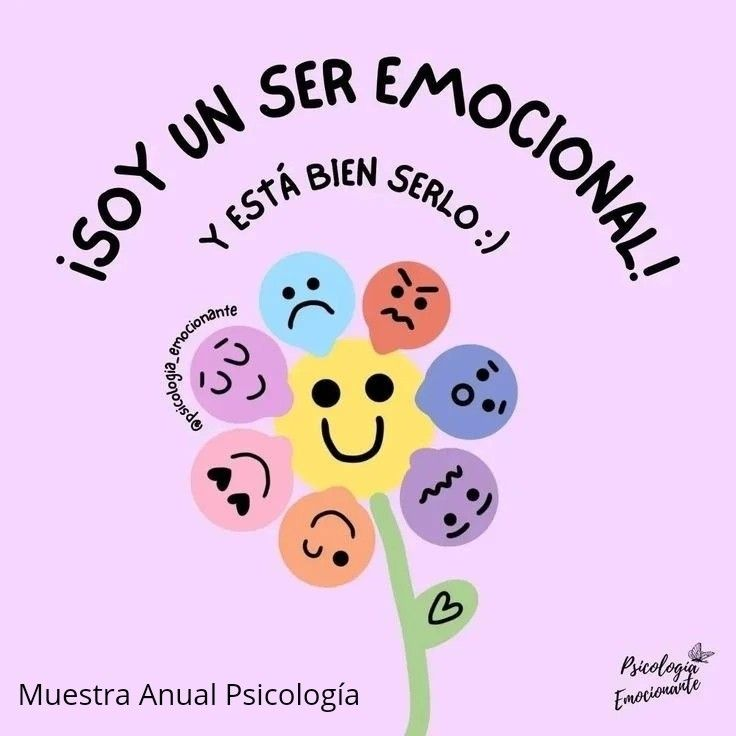
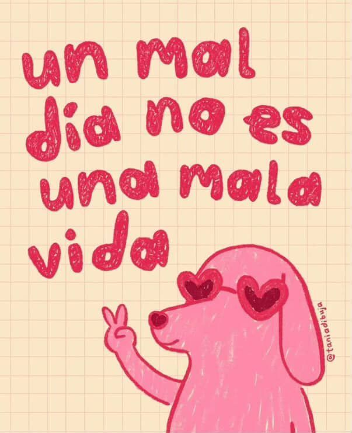
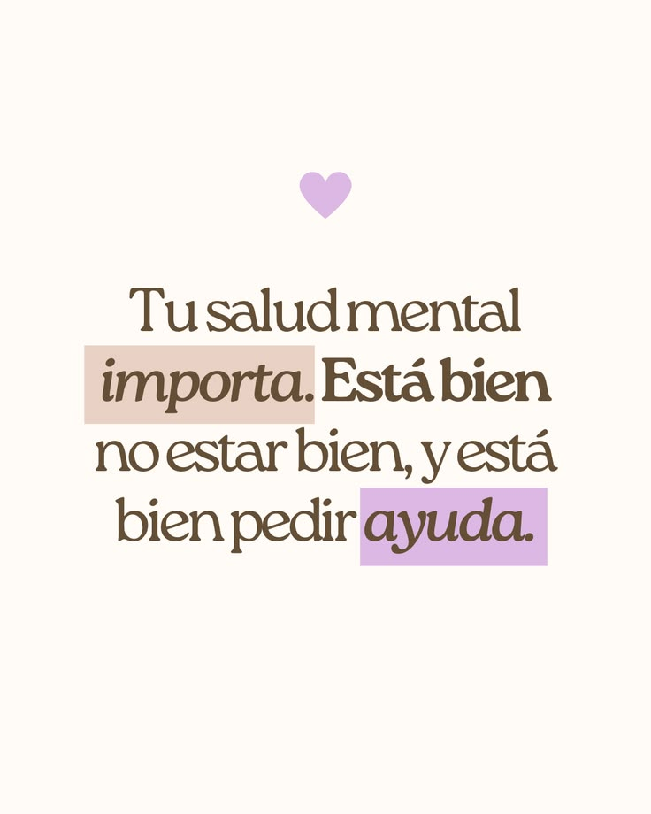
Es la capacidad de identificar, entender y expresar nuestras emociones de manera saludable. No se trata de reprimirlas, sino de aprender a manejarlas para que no nos controlen a nosotros. “Tus emociones son como el clima: cambian constantemente. Tú no eres el clima, eres el cielo que lo sostiene todo. Aprende a observar la tormenta sin dejar que te destruya.
Es la valoración y el respeto que tienes por ti misma. Es la convicción interna de que tus pensamientos, sentimientos y cuerpo son valiosos por lo que son, no por cómo se ven o por lo que otros digan de ti. Abrazar tus virtudes y tus áreas de mejora, poner límites y cuidarte porque sabes que eres importante, creer en tu capacidad para aprender y superar retos.
como una vitrina de trofeos: la gente solo publica sus mejores momentos, sus mejores ángulos y sus fotos con filtros. El problema empieza cuando comparamos nuestro día normal (con ojeras, tareas o granitos) con la “vida perfecta” que los demás eligen mostrar en internet. Recuerda que detrás de una foto perfecta hubo 50 intentos que salieron mal. Tú no eres un número, tu belleza y tu inteligencia no suben ni bajan por la cantidad de likes que recibes.
Es el conjunto de personas (familia, amigas, profesores o profesionales) en quienes confías para compartir tus problemas y emociones. El apoyo no es debilidad; es la inteligencia de saber que somos más fuertes cuando nos acompañamos. Identifica quiénes son las personas que te escuchan sin juzgarte y te hacen sentir segura.
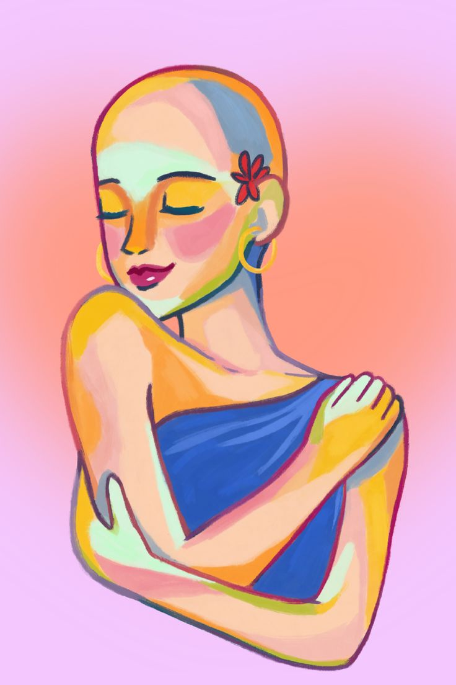
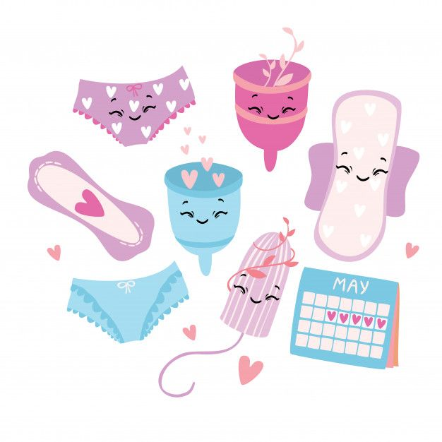
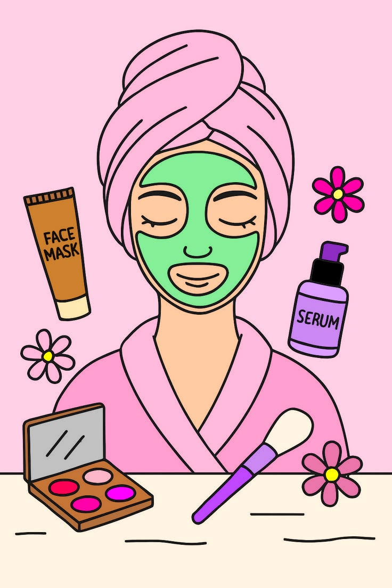
el hábito de darle un "respiro" a tu piel cada día. No necesitas mil productos, solo la constancia de limpiar las impurezas para que tus poros respiren y tu rostro se mantenga fresco y saludable. Usar bloqueador todos los días, incluso si está nublado, para prevenir manchas y daños a futuro. “Tu piel es el reflejo de tu salud interna. Cuídala con suavidad, protégela del sol y deja que brille de forma natural.”
zona íntima tiene un sistema de limpieza propio y un pH delicado; por eso, el objetivo es mantenerla limpia y seca sin usar productos que la irriten o la dañen. Lava únicamente la vulva (la parte externa) con agua o un jabón muy suave. Nunca laves el interior (la vagina), ella se limpia sola. "Menos es más: tu zona íntima es sabia y se cuida sola. Tú solo ayúdala manteniéndola seca, fresca y cómoda."
entender que tu cuerpo cambia cada mes, saber cómo mantenerte limpia y cómoda en esos días, y no sentir vergüenza por algo que es totalmente natural y saludable. Trata de cambiar tu toallita o tampón cada 4 horas para sentirte siempre fresca y evitar accidentes. “Tener el periodo es señal de que tu cuerpo es fuerte y sano. ¡Vívelo con calma y sin secretos!”
aprender a escucharte y darte lo que necesitas para estar bien. No es un lujo, es dedicarte unos minutos al día para recargar pilas, sentirte cómoda en tu piel y cuidar tu salud para que puedas cumplir todo lo que te propongas. Haz algo que te guste (leer, bailar, skincare) solo porque te hace feliz. “Eres única y valiosa. Trátate con la misma ternura y respeto con la que tratarías a tu mejor amiga.”
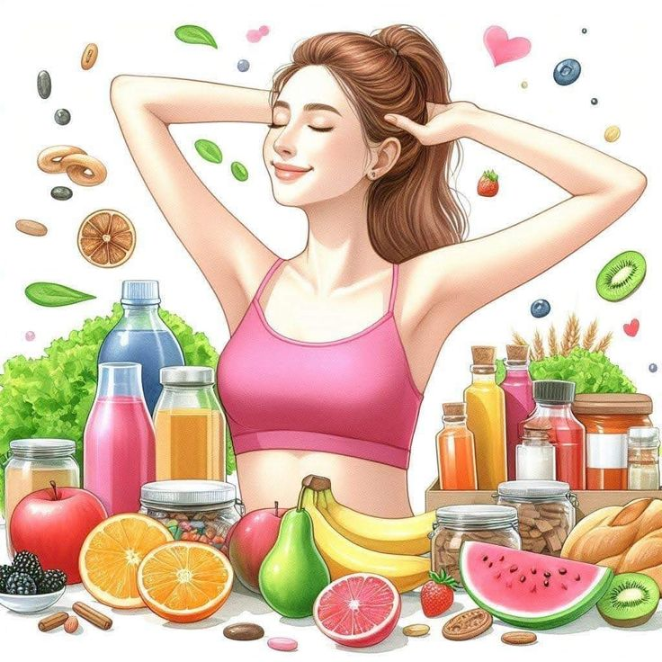
poner tu cuerpo en movimiento para fortalecer tu corazón, tus huesos y tus músculos. No se trata solo de “hacer deporte”, sino de darle a tu cuerpo la actividad que necesita para liberar estrés y sentirse lleno de energía. Elige lo que te guste: bailar, saltar la cuerda o caminar. ¡Todo movimiento cuenta!
darle a tu cuerpo el combustible de mejor calidad para que funcione correctamente. En la adolescencia, comer bien no es “hacer dieta”, es elegir alimentos que te ayuden a crecer, pensar mejor y tener la energía necesaria para cumplir tus metas.
el tiempo sagrado en el que tu cuerpo se repara y tu cerebro procesa todo lo aprendido. No es tiempo perdido; es el proceso biológico necesario para que tus hormonas se equilibren y puedas despertar con la mente clara y el cuerpo con energía. Dormir bien es el mejor remedio contra la irritabilidad, la ansiedad y la falta de
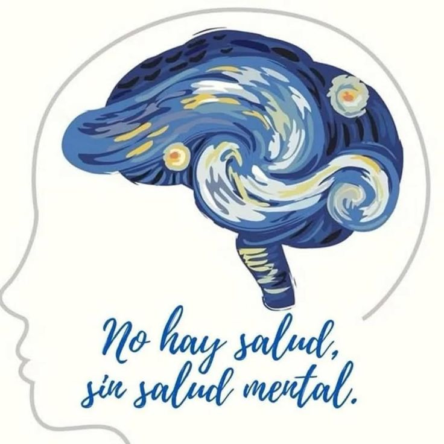
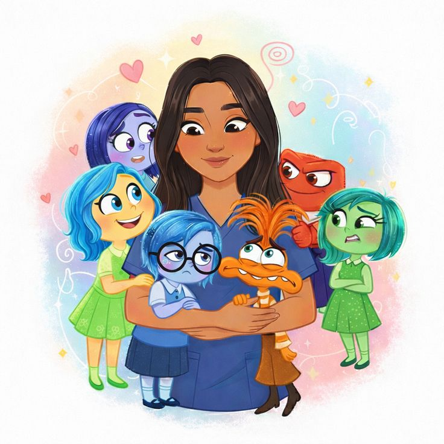
Recordar que lo que vemos en redes es un “resumen editado” de la vida de los demás, no la realidad completa. Tú valor como persona no sube ni baja según la cantidad de reacciones en una foto o si alguien te dejó “en visto. “A veces pasamos horas revisando quién vio nuestra historia, quién nos dio ‘me gusta’ o por qué alguien no reaccionó a nuestra foto. Sin darnos cuenta, le entregamos el control de nuestro estado de ánimo a una pantalla. Pero recuerda esto: Tu paz no puede depender de un ‘like’
responsable afectivamente no significa ser perfecto, sino ser honesto. Es entender que del otro lado de la pantalla hay una persona con sentimientos, miedos y expectativas, igual que tú. Si alguien te dice que algo que hiciste le dolió, no respondas con un “exageras” o “estás loco/a”. Escuchar y tratar de entender su punto de vista es ser responsable. “Nadie está obligado a quererte, pero todos están obligados a respetarte.”
veces, cuando estamos cansados, tristes o bajo mucha presión, nuestra mente empieza a generar pensamientos automáticos: 'no puedes', 'no eres suficiente', 'todos son mejores que tú'. Tienes que saber algo: Tú no eres esos pensamientos. Tú eres quien los escucha. Los pensamientos son como nubes que pasan; algunos son grises y oscuros, pero no son el cielo. El cielo siempre está ahí, y ese eres tú." "Trátate como tratarías a tu mejor amigo. Si no le dirías algo tan feo a él, ¿por qué te lo dices a ti?"
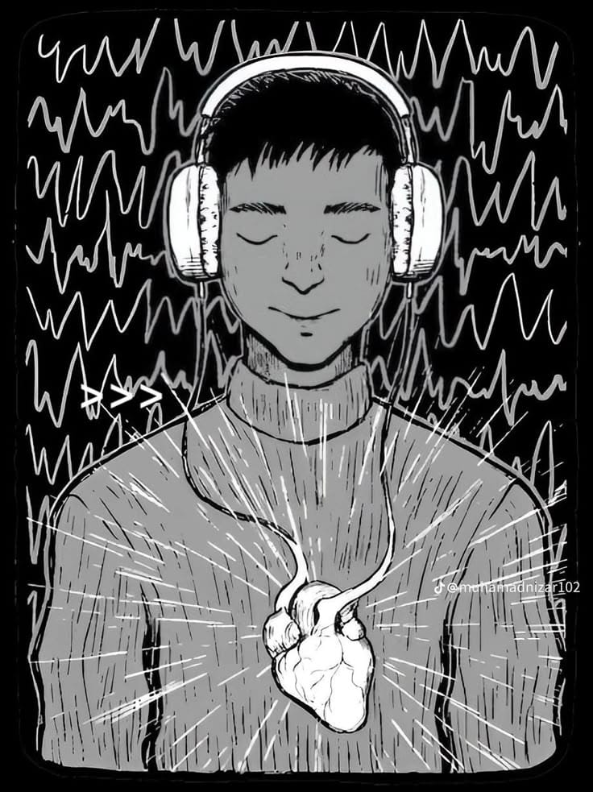
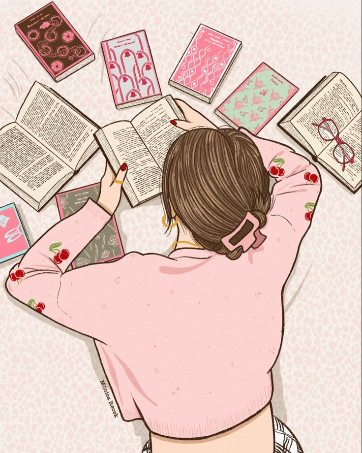
algo que te guste (no solo lo de la escuela) reduce el estrés y mejora tu concentración. Es como darle un gimnasio a tu imaginación. No tienes que leer un libro de 500 páginas. Un cómic, un artículo sobre algo que te apasione o un poema cuentan. Lo importante es el hábito de enfocarte en algo con calma.
música tiene el poder de cambiar tu estado de ánimo en segundos. Puede ayudarte a concentrarte, a desahogarte cuando estás triste o a motivarte cuando no tienes ganas de nada. Si estás triste, a veces una canción alegre ayuda a subir el ánimo, y a veces una triste ayuda a validar lo que sientes. Tú eliges qué necesita tu corazón hoy.
bailas, tu cerebro libera endorfinas y dopamina (las hormonas de la felicidad). Es imposible terminar de bailar y no sentirte aunque sea un poquito mejor. “Si tuviste un día horrible en la escuela, llega a tu casa, pon tu canción favorita a todo volumen y báilala como si nadie te estuviera viendo. Solo 5 minutos bastan para ‘resetear’ tu mal humor”.